Árbol de Decisión#
Sección 1: Configuración Inicial y Preparación de Datos#
1.Importación de librerías#
import time
import pandas as pd
import numpy as np
import matplotlib.pyplot as plt
import seaborn as sns
import joblib
import os
from sklearn.model_selection import train_test_split, GridSearchCV
from sklearn.preprocessing import StandardScaler, OneHotEncoder
from sklearn.compose import ColumnTransformer
from sklearn.pipeline import Pipeline
from imblearn.pipeline import Pipeline as ImbPipeline
from imblearn.over_sampling import SMOTE, ADASYN
from sklearn.tree import DecisionTreeClassifier
from sklearn.metrics import (
accuracy_score, precision_score, recall_score, f1_score, roc_auc_score,
confusion_matrix, ConfusionMatrixDisplay, RocCurveDisplay
)
2.Cargar y dividir datos#
df = pd.read_csv(r"C:\Users\DELL\Desktop\Aprendizaje_de_Maquina\credit_risk_the_end.csv")
X = df.drop(columns=["incumplimiento_credito"])
y = df["incumplimiento_credito"]
X_train, X_test, y_train, y_test = train_test_split(
X, y, test_size=0.2, stratify=y, random_state=42
)
3.Preprocesamiento (numéricas + categóricas)#
cat_cols = X.select_dtypes(include="object").columns.tolist()
num_cols = X.select_dtypes(include=["int64", "float64"]).columns.tolist()
preprocessor = ColumnTransformer([
("num", StandardScaler(), num_cols),
("cat", OneHotEncoder(handle_unknown="ignore"), cat_cols)
])
Sección 2: Definición de GridSearch#
1.Crear Pipelines con distintas técnicas#
param_grid = {
'clf__criterion': ["gini", "entropy", "log_loss"], # tipo de función de impureza
'clf__splitter': ["best", "random"], # estrategia de división
'clf__max_depth': [3, 5, 10, 20, None], # profundidad máxima
'clf__min_samples_split': [2, 5, 10, 20], # min muestras para dividir nodo
'clf__min_samples_leaf': [1, 2, 4, 10], # min muestras por hoja
'clf__max_features': [None, "sqrt", "log2"], # número máx de features por split
'clf__ccp_alpha': [0.0, 0.01, 0.05] # complejidad de poda (pruning)
}
pipelines = {
"SMOTE": ImbPipeline([
("pre", preprocessor),
("smote", SMOTE(random_state=42)),
("clf", DecisionTreeClassifier(random_state=42))
]),
"ADASYN": ImbPipeline([
("pre", preprocessor),
("adasyn", ADASYN(random_state=42)),
("clf", DecisionTreeClassifier(random_state=42))
]),
"class_weight": Pipeline([
("pre", preprocessor),
("clf", DecisionTreeClassifier(class_weight="balanced", random_state=42))
])
}
2.Entrenamiento y Evaluación con GridSearchCV#
from sklearn.model_selection import GridSearchCV
from sklearn.metrics import (
accuracy_score, precision_score, recall_score,
f1_score, roc_auc_score
)
import joblib
import time
import os
import pandas as pd
# 1. Definir grilla de hiperparámetros
param_grid = {
'clf__criterion': ["gini", "entropy"], # log_loss puede ser inestable
'clf__splitter': ["best"], # evita aleatoriedad innecesaria
'clf__max_depth': [3, 5, 10], # árboles más controlados
'clf__min_samples_split': [10, 20], # requiere más datos para dividir
'clf__min_samples_leaf': [5, 10], # evita hojas muy pequeñas
'clf__max_features': ["sqrt"], # aleatoriza un poco sin sobreajustar
'clf__ccp_alpha': [0.01, 0.05, 0.1] # poda más agresiva
}
# 2. Crear carpeta para guardar modelos
os.makedirs("modelos_arbol_balanceados", exist_ok=True)
# 3. Entrenamiento y evaluación
results = {}
for name, pipe in pipelines.items():
print(f"\n🔍 Entrenando con GridSearchCV: {name}")
grid = GridSearchCV(
estimator=pipe,
param_grid=param_grid,
scoring="average_precision",
cv=5,
n_jobs=-1,
verbose=1
)
t0 = time.time()
grid.fit(X_train, y_train)
fit_time = (time.time() - t0) / 60
best_model = grid.best_estimator_
y_prob = best_model.predict_proba(X_test)[:, 1]
y_pred = (y_prob >= 0.5).astype(int)
results[name] = {
"model": best_model,
"grid": grid,
"y_prob": y_prob,
"y_pred": y_pred,
"fit_minutes": fit_time,
"Accuracy": accuracy_score(y_test, y_pred),
"Precision": precision_score(y_test, y_pred, zero_division=0),
"Recall1": recall_score(y_test, y_pred, zero_division=0),
"F1": f1_score(y_test, y_pred, zero_division=0),
"AUC": roc_auc_score(y_test, y_prob)
}
joblib.dump(best_model, f"modelos_arbol_balanceados/arbol_{name}.joblib")
🔍 Entrenando con GridSearchCV: SMOTE
Fitting 5 folds for each of 72 candidates, totalling 360 fits
c:\Users\DELL\anaconda3\envs\KrakenData\lib\site-packages\sklearn\base.py:474: FutureWarning: `BaseEstimator._validate_data` is deprecated in 1.6 and will be removed in 1.7. Use `sklearn.utils.validation.validate_data` instead. This function becomes public and is part of the scikit-learn developer API.
warnings.warn(
🔍 Entrenando con GridSearchCV: ADASYN
Fitting 5 folds for each of 72 candidates, totalling 360 fits
c:\Users\DELL\anaconda3\envs\KrakenData\lib\site-packages\sklearn\base.py:474: FutureWarning: `BaseEstimator._validate_data` is deprecated in 1.6 and will be removed in 1.7. Use `sklearn.utils.validation.validate_data` instead. This function becomes public and is part of the scikit-learn developer API.
warnings.warn(
🔍 Entrenando con GridSearchCV: class_weight
Fitting 5 folds for each of 72 candidates, totalling 360 fits
Sección 3: Evaluación Básica del Modelo#
1.Tabla comparativa de métricas#
from matplotlib.colors import LinearSegmentedColormap
# Crear un colormap basado en Pastel1
pastel1_colors = sns.color_palette("Pastel1", 9)
pastel1_cmap = LinearSegmentedColormap.from_list("Pastel1", pastel1_colors.as_hex())
# Crear tabla de métricas
df_metrics = pd.DataFrame(results).T[
["Accuracy", "Precision", "Recall1", "F1", "AUC", "fit_minutes"]
]
# Aplicar estilo con colores Pastel1
styled = df_metrics.style.background_gradient(
cmap=pastel1_cmap, axis=0, subset=["Recall1", "AUC", "F1"]
).format("{:.4f}", subset=["Accuracy", "Precision", "Recall1", "F1", "AUC"]).format(
"{:.2f}", subset=["fit_minutes"]
)
display(styled)
| Accuracy | Precision | Recall1 | F1 | AUC | fit_minutes | |
|---|---|---|---|---|---|---|
| SMOTE | 0.8050 | 0.1067 | 0.1738 | 0.1322 | 0.5618 | 0.42 |
| ADASYN | 0.6993 | 0.0968 | 0.3020 | 0.1466 | 0.5506 | 1.30 |
| class_weight | 0.7978 | 0.1560 | 0.3095 | 0.2074 | 0.5783 | 0.25 |
2.Boxplot de Métricas por Algoritmo#
df_plot = df_metrics.drop(columns="fit_minutes").reset_index().melt(id_vars="index")
plt.figure(figsize=(10, 6))
sns.barplot(data=df_plot, x="variable", y="value", hue="index",
palette="Pastel1" )
plt.title("Comparación de Métricas por Técnica")
plt.ylabel("Valor")
plt.xlabel("Métrica")
plt.legend(title="Técnica")
plt.tight_layout()
plt.show()
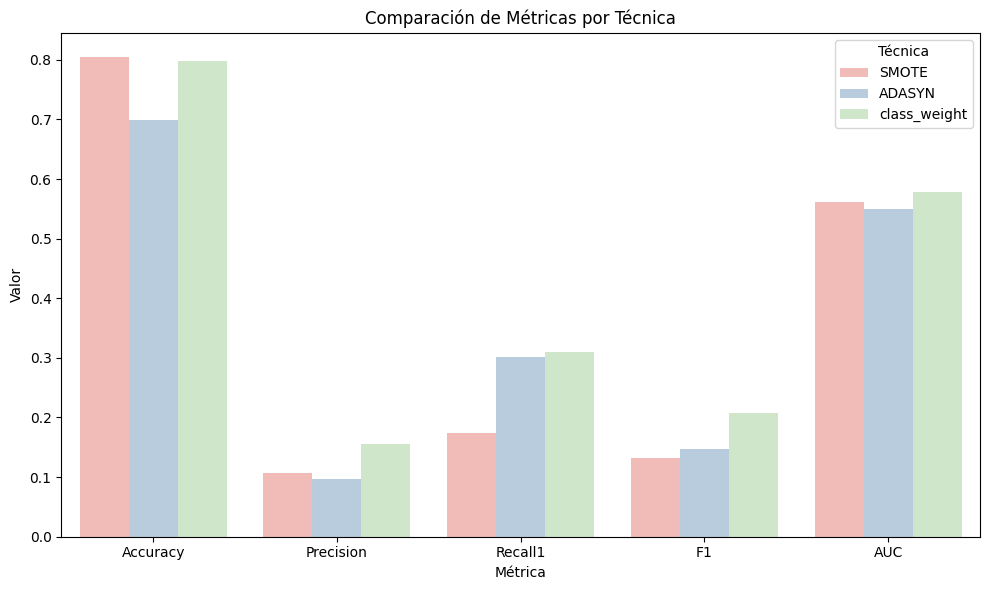
3.Mapa de calor (heatmap) de métricas#
from matplotlib.colors import ListedColormap
# 1. Asegurar solo columnas numéricas
heatmap_data = df_metrics.drop(columns="fit_minutes").copy()
heatmap_data = heatmap_data.apply(pd.to_numeric, errors="coerce")
# 2. Crear un colormap basado en Pastel1
pastel_palette = sns.color_palette("Pastel1", as_cmap=True) # colormap continuo
# 3. Dibujar heatmap
plt.figure(figsize=(8, 4))
sns.heatmap(heatmap_data, annot=True, cmap=pastel_palette, fmt=".4f", linewidths=0.5, linecolor='white')
plt.title("Heatmap de Métricas por Técnica", fontsize=14)
plt.tight_layout()
plt.show()
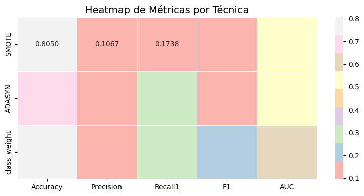
4.Curvas ROC por técnica de Balanceo#
plt.figure(figsize=(8,6))
for name, res in results.items():
RocCurveDisplay.from_predictions(y_test, res["y_prob"], name=name, ax=plt.gca())
plt.title("Curvas ROC por técnica de balanceo")
plt.grid()
plt.tight_layout()
plt.show()
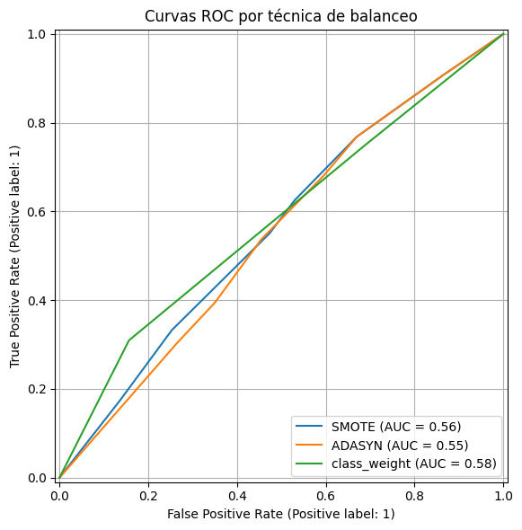
5.Matrices de confusión#
import matplotlib as mpl
# Crear un colormap personalizado similar a Pastel1
pastel_colors = mpl.colors.ListedColormap(sns.color_palette("Pastel1", 9).as_hex())
fig, axs = plt.subplots(1, 3, figsize=(16, 4))
for i, (name, res) in enumerate(results.items()):
cm = confusion_matrix(y_test, res["y_pred"])
# Dibujar como imagen de matriz
im = axs[i].imshow(cm, interpolation='nearest', cmap=pastel_colors)
axs[i].set_title(name)
# Agregar etiquetas
tick_marks = np.arange(len(cm))
axs[i].set_xticks(tick_marks)
axs[i].set_yticks(tick_marks)
axs[i].set_xlabel("Predicción")
axs[i].set_ylabel("Real")
# Mostrar valores en celdas
for j in range(cm.shape[0]):
for k in range(cm.shape[1]):
axs[i].text(k, j, format(cm[j, k], 'd'),
ha="center", va="center", color="black")
plt.suptitle("Matrices de Confusión por Técnica", fontsize=16)
plt.tight_layout()
plt.show()
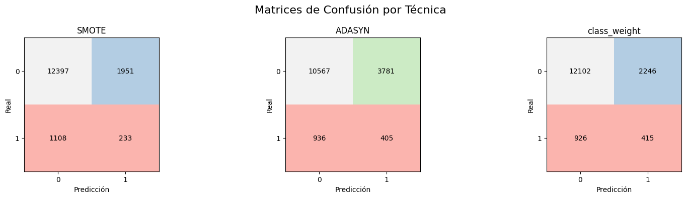
6.Gráfico Tiempo de Entrenamiento#
import warnings
warnings.filterwarnings("ignore")
# Extraer los tiempos de entrenamiento
df_tiempo = pd.DataFrame({
"Técnica": list(results.keys()),
"Tiempo (minutos)": [res["fit_minutes"] for res in results.values()]
}).sort_values(by="Tiempo (minutos)", ascending=False)
# Dibujar gráfico de barras
plt.figure(figsize=(8, 5))
sns.barplot(data=df_tiempo, x="Técnica", y="Tiempo (minutos)", palette="Pastel1")
plt.title("Tiempo de Entrenamiento por Técnica de Balanceo", fontsize=14)
plt.ylabel("Minutos")
plt.xlabel("Técnica")
plt.grid(axis="y")
plt.tight_layout()
plt.show()
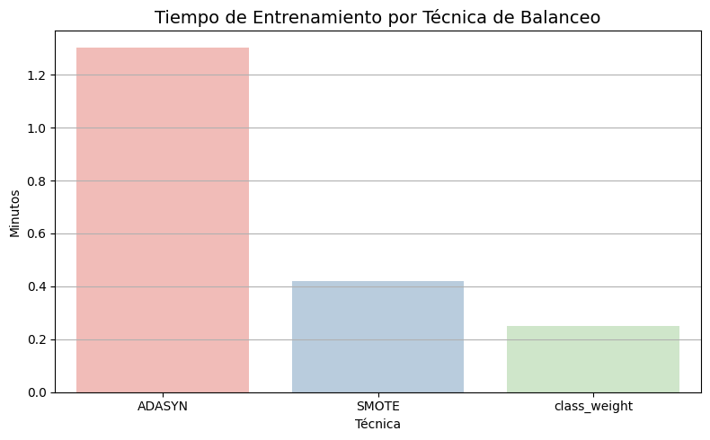
7.Tabla de Hiperparámetros Óptimos por Técnica#
# 1. Extraer hiperparámetros
params_rows = []
for name, res in results.items():
row = {"Técnica": name}
cleaned_params = {k.replace("clf__", ""): v for k, v in res["grid"].best_params_.items()}
row.update(cleaned_params)
params_rows.append(row)
# 2. Crear DataFrame
df_params = pd.DataFrame(params_rows).set_index("Técnica")
# 3. Identificar columnas numéricas (solo a esas se aplicará highlight_max)
cols_numericas = df_params.select_dtypes(include=["int", "float"]).columns.tolist()
# 4. Estilo visual
styled_params = (
df_params.style
.set_caption("📌 Mejores Hiperparámetros por Técnica de Balanceo")
.highlight_max(subset=cols_numericas, axis=0, color="lightgreen")
.format(na_rep="-")
)
# 5. Mostrar tabla
display(styled_params)
| ccp_alpha | criterion | max_depth | max_features | min_samples_leaf | min_samples_split | splitter | |
|---|---|---|---|---|---|---|---|
| Técnica | |||||||
| SMOTE | 0.010000 | entropy | 10 | sqrt | 10 | 10 | best |
| ADASYN | 0.010000 | entropy | 10 | sqrt | 5 | 20 | best |
| class_weight | 0.010000 | entropy | 3 | sqrt | 5 | 10 | best |
8.Curva de aprendizaje (Recall1)#
import warnings
from sklearn.model_selection import learning_curve
# Suprimir todos los warnings
warnings.filterwarnings("ignore")
from sklearn.model_selection import learning_curve
# Usamos el mejor pipeline (por ejemplo, con SMOTE)
pipe = results["SMOTE"]["model"] # O el que desees
train_sizes, train_scores, val_scores = learning_curve(
estimator=pipe,
X=X_train,
y=y_train,
cv=5,
scoring="recall",
train_sizes=np.linspace(0.1, 1.0, 6),
n_jobs=14,
shuffle=True,
random_state=42
)
# Calcular medias
train_mean = train_scores.mean(axis=1)
val_mean = val_scores.mean(axis=1)
# Dibujar curva
plt.figure(figsize=(8, 5))
plt.plot(train_sizes, train_mean, 'o-', label='Entrenamiento', color='lightcoral')
plt.plot(train_sizes, val_mean, 'o-', label='Validación', color='cornflowerblue')
plt.fill_between(train_sizes, train_mean - train_scores.std(axis=1), train_mean + train_scores.std(axis=1), alpha=0.2, color='lightcoral')
plt.fill_between(train_sizes, val_mean - val_scores.std(axis=1), val_mean + val_scores.std(axis=1), alpha=0.2, color='cornflowerblue')
plt.title("Curva de Aprendizaje – Árbol de Decisión (Recall)")
plt.xlabel("Tamaño del conjunto de entrenamiento")
plt.ylabel("Recall")
plt.legend(loc="best")
plt.grid()
plt.tight_layout()
plt.show()
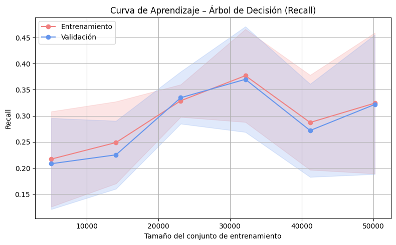
9.Curvas Precision-Recall#
from sklearn.metrics import precision_recall_curve, PrecisionRecallDisplay
plt.figure(figsize=(8, 6))
for name, res in results.items():
precision, recall, _ = precision_recall_curve(y_test, res["y_prob"])
disp = PrecisionRecallDisplay(precision=precision, recall=recall)
disp.plot(ax=plt.gca(), name=name)
plt.title("Curva Precision-Recall por Técnica de Balanceo", fontsize=14)
plt.xlabel("Recall")
plt.ylabel("Precision")
plt.grid(True)
plt.legend(title="Técnica")
plt.tight_layout()
plt.show()
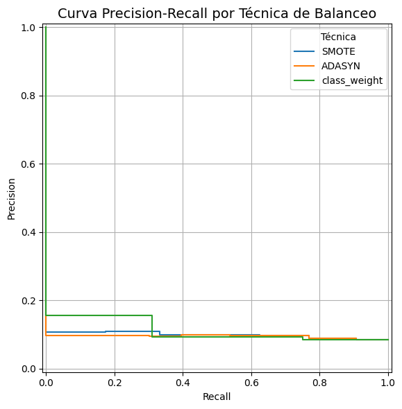
# Extraer los tiempos de entrenamiento
df_tiempo = pd.DataFrame({
"Técnica": list(results.keys()),
"Tiempo (minutos)": [res["fit_minutes"] for res in results.values()]
}).sort_values(by="Tiempo (minutos)", ascending=False)
# Dibujar gráfico de barras
plt.figure(figsize=(8, 5))
sns.barplot(data=df_tiempo, x="Técnica", y="Tiempo (minutos)", palette="Pastel1")
plt.title("⏱️ Tiempo de Entrenamiento por Técnica de Balanceo", fontsize=14)
plt.ylabel("Minutos")
plt.xlabel("Técnica")
plt.grid(axis="y")
plt.tight_layout()
plt.show()
10.Estructura del Arbol#
# Crear tabla de métricas desde el diccionario 'results'
df_metrics = pd.DataFrame(results).T[
["Accuracy", "Precision", "Recall1", "F1", "AUC", "fit_minutes"]
]
from sklearn.tree import plot_tree
import matplotlib.pyplot as plt
import seaborn as sns
import numpy as np
from sklearn.tree import DecisionTreeClassifier
# 1. Paleta
pastel_colors = sns.color_palette("Pastel1", 9).as_hex()
# 2. Elegir técnica con mayor recall
mejor_tecnica = df_metrics["Recall1"].idxmax()
mejor_modelo = results[mejor_tecnica]["model"]
# 3. Extraer el clasificador DecisionTreeClassifier
clf = None
for name, step in mejor_modelo.named_steps.items():
if isinstance(step, DecisionTreeClassifier):
clf = step
break
if clf is None:
raise ValueError("❌ No se encontró un clasificador tipo DecisionTreeClassifier en el pipeline.")
# 4. Generar nombres genéricos si no hay nombres disponibles
feature_names = [f"X{i}" for i in range(clf.n_features_in_)]
# 5. Dibujar el árbol
plt.figure(figsize=(20, 10))
plot_tree(
clf,
max_depth=3,
filled=True,
rounded=True,
impurity=True,
proportion=True,
class_names=["No Incumple", "Incumple"],
feature_names=feature_names
)
plt.title(f"Estructura del Árbol – Técnica: {mejor_tecnica}", fontsize=16)
plt.show()
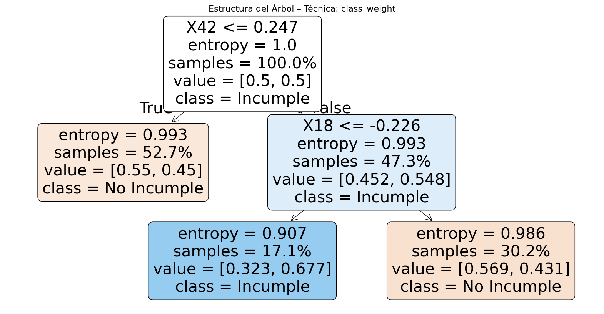
11.Heatmap de Recall1 por Técnica y Penalización#
import warnings
warnings.filterwarnings("ignore")
# Construir DataFrame con Recall1 por técnica
df_heat = pd.DataFrame([
{
"Técnica": name,
"Recall1": res["Recall1"]
}
for name, res in results.items()
])
# Reorganizar para heatmap (una sola columna)
df_heat.set_index("Técnica", inplace=True)
# Dibujar heatmap
plt.figure(figsize=(4, 3))
sns.heatmap(
df_heat,
annot=True,
fmt=".3f",
cmap=sns.color_palette("Pastel1", as_cmap=True),
linewidths=0.5,
linecolor="white"
)
plt.title("Heatmap de Recall1 por Técnica de Balanceo", fontsize=12)
plt.tight_layout()
plt.show()
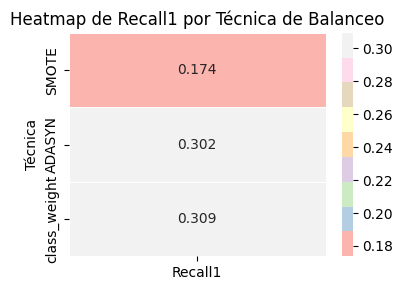
12.Radar Plot por modelo para comparar métricas#
from math import pi
# 1. Prepara los datos
df_radar = df_metrics.drop(columns="fit_minutes").copy()
df_radar.index.name = "Técnica"
df_radar = df_radar.reset_index()
# 2. Ejes del radar
metrics = df_radar.columns[1:] # columnas: Accuracy, Precision, Recall1, F1, AUC
N = len(metrics)
# 3. Ángulos para cada métrica
angles = [n / float(N) * 2 * pi for n in range(N)]
angles += angles[:1] # cerrar el círculo
# 4. Inicializar figura
plt.figure(figsize=(8, 8))
plt.subplot(111, polar=True)
# 5. Dibujar por técnica
for i in range(len(df_radar)):
values = df_radar.iloc[i, 1:].values.tolist()
values += values[:1] # cerrar la figura
plt.plot(angles, values, label=df_radar.iloc[i, 0], linewidth=2)
plt.fill(angles, values, alpha=0.1)
# 6. Estilo del radar
plt.xticks(angles[:-1], metrics, fontsize=12)
plt.yticks([0.2, 0.4, 0.6, 0.8], ["0.2", "0.4", "0.6", "0.8"], color="gray", size=10)
plt.title("Radar Plot – Comparación de Métricas por Técnica", size=14, y=1.1)
plt.legend(loc='upper right', bbox_to_anchor=(1.3, 1.1))
plt.tight_layout()
plt.show()
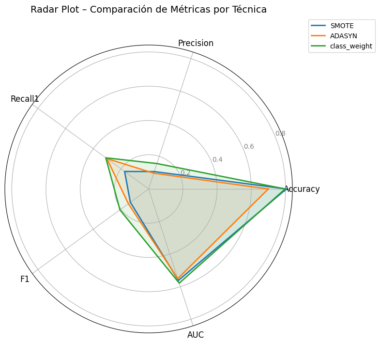
13.Feature importance#
# Asegúrate de tener clf como el DecisionTreeClassifier ya entrenado
importances = clf.feature_importances_
# Extraer el preprocesador del pipeline
preprocessor = mejor_modelo.named_steps["pre"]
# Obtener nombres numéricos
num_features = preprocessor.transformers_[0][2]
# Obtener nombres codificados de categorías
encoder = preprocessor.named_transformers_["cat"]
cat_features = encoder.get_feature_names_out(preprocessor.transformers_[1][2])
# Combinar todos los nombres
feature_names = list(num_features) + list(cat_features)
# Crear DataFrame con nombres y su importancia
import pandas as pd
df_importancia = pd.DataFrame({
"Variable": feature_names,
"Importancia": importances
}).sort_values(by="Importancia", ascending=False)
# Mostrar tabla
display(df_importancia.head(15)) # puedes ajustar cuántas mostrar
| Variable | Importancia | |
|---|---|---|
| 18 | fuente_externa_2 | 0.767384 |
| 42 | promedio_dias_entre_registro_y_pago | 0.232616 |
| 0 | tipo_contrato | 0.000000 |
| 57 | estado_civil_Married | 0.000000 |
| 65 | ocupacion_Core staff | 0.000000 |
| 64 | ocupacion_Accountants | 0.000000 |
| 63 | tipo_vivienda_With parents | 0.000000 |
| 62 | tipo_vivienda_Other apartment | 0.000000 |
| 61 | tipo_vivienda_House / apartment | 0.000000 |
| 60 | estado_civil_Widow | 0.000000 |
| 59 | estado_civil_Single / not married | 0.000000 |
| 58 | estado_civil_Separated | 0.000000 |
| 56 | estado_civil_Civil marriage | 0.000000 |
| 67 | ocupacion_High skill tech staff | 0.000000 |
| 55 | nivel_educativo_Secondary / secondary special | 0.000000 |
import seaborn as sns
import matplotlib.pyplot as plt
plt.figure(figsize=(10, 6))
sns.barplot(data=df_importancia.head(15), x="Importancia", y="Variable", palette="pastel")
plt.title(f"🔍 Feature Importance – Árbol de Decisión ({mejor_tecnica})")
plt.xlabel("Importancia")
plt.ylabel("Variable")
plt.tight_layout()
plt.show()
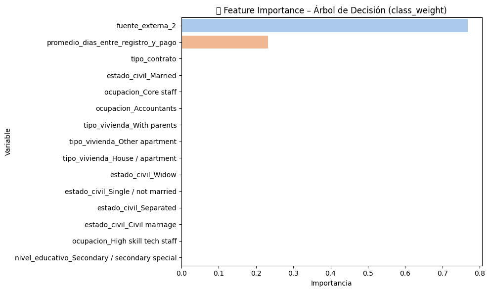
Sección 4: Guardar Resultados#
import joblib
import os
import re
# Función para limpiar nombres de archivo
def limpiar_nombre(nombre):
return re.sub(r'[^\w\-_.]', '_', nombre)
# Ruta del escritorio
desktop_path = os.path.join(os.environ["USERPROFILE"], "Desktop")
base_folder_name = "modelos_guardados"
model_dir = os.path.join(desktop_path, base_folder_name)
# Evitar sobrescribir carpeta
counter = 1
while os.path.exists(model_dir):
model_dir = os.path.join(desktop_path, f"{base_folder_name}_{counter}")
counter += 1
os.makedirs(model_dir)
# Guardar modelos
for metodo, res in results.items():
metodo_limpio = limpiar_nombre(metodo)
nombre_archivo = os.path.join(model_dir, f"{metodo_limpio}.joblib")
if "model" in res:
joblib.dump(res["model"], nombre_archivo)
else:
print(f"⚠️ No se encontró modelo en: {metodo}")
print(f"\n✅ Modelos guardados exitosamente en: {model_dir}")
✅ Modelos guardados exitosamente en: C:\Users\DELL\Desktop\modelos_guardados_5